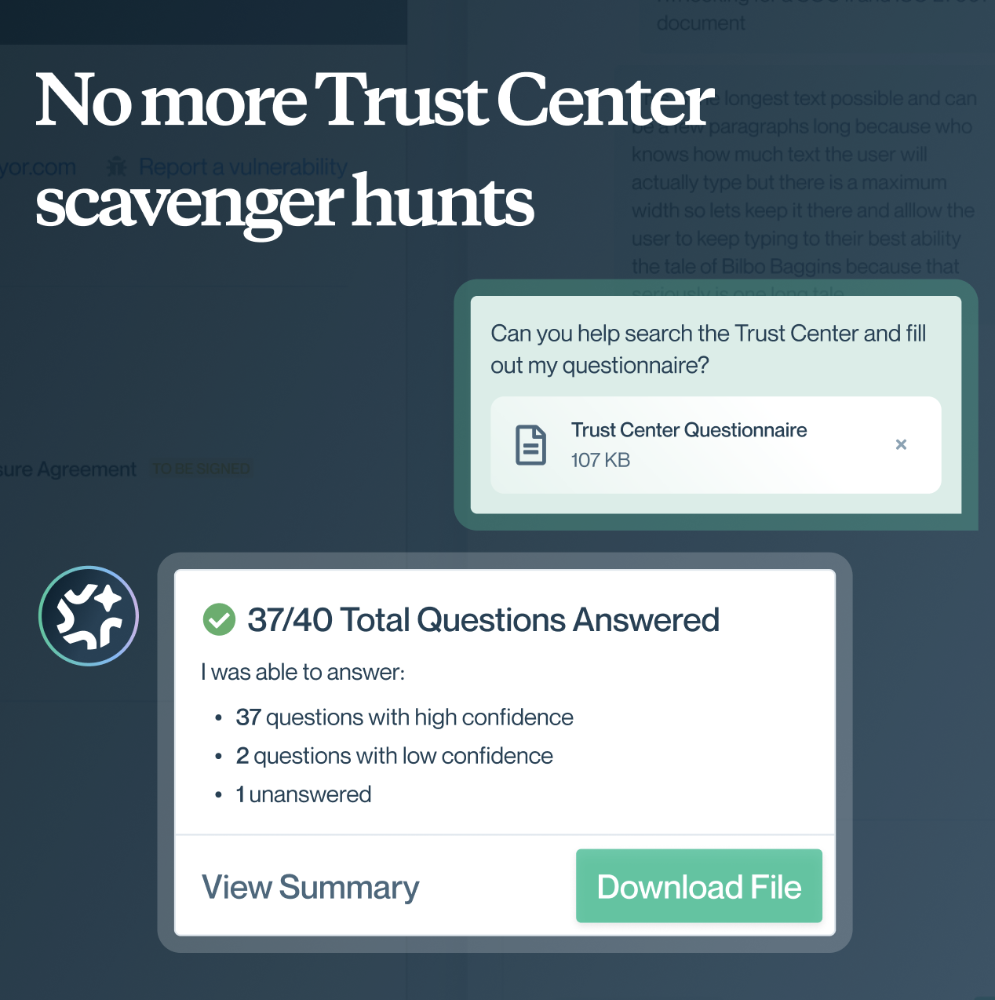

Creating the first agentic Trust Center.
I led design on a seven-person squad that defined this category - this is how we turned AI-skeptic customers into first adopters.

Why we had to ship first, without losing the customers most afraid of AI.
The first round of customer research wasn't about features. It was about the future of the Trust Center - what visitors actually needed, what admins wanted to deflect, and which AI behaviors felt safe versus reckless.


Competitors were starting to talk about AI, but none had shipped an agentic Trust Center experience yet.
The same admins who wanted an agent also feared the complications of security: Product lines, access groups, secret documents. An agent needed to respond based on the user's permissions.
Drop a 1,000-question xlsx, get back a cited CSV with answers, sources, and next steps. The highest-value tool call - and the most feared.
Why this brief was harder than "add AI"
A security prospect visits a Trust Center, downloads a SOC 2, checks the compliance badges, and leaves. Except they almost never actually leave with everything they came for. Most return with follow-up questions sent to their customer service, sales, or security team partner. As those teams get smaller in the age of AI, the volume of inbound only grows. An unanswered question can stall a deal, and a slow response can lose one entirely.
This bet was pushing toward a future where visitors were unafraid to interact with a Trust Center agent. One that knew the documents, respected the access gates, and escalated what it couldn't safely answer. The goal was 95% touchless reviews by the end of 2026, meaning users can find what they need in the Trust Center 95% of the time, without ever reaching out for extra help to partner teams.
This first meant we needed to ship an MVP within two months, with a squad that was still onboarding to the product. We were learning the domain, building the feature, and defining the category all at the same time.
The fears we heard from admins were not abstract. They could picture hallucinations surfacing wrong answers. They could picture gated content leaking across product lines. They could picture accidental disclosure of documents meant for a different access group. Every admin we spoke to could name a specific scenario that scared them.
From the safest tool call to the riskiest, each release earned the next.
With research sessions between each release, I sequenced the tool calls to ship the safest first, and the riskiest capability as its own project.

How three tool calls all run through one permission layer.
Before touching the chat surface, I mapped what happened underneath: every query had to route to the right tool call, and every response through the same permission layer. The chat UI was just the wrapper - the real complexity was the routing.

Constraints we designed around
- Two months to a working Bundle and Ask beta. One additional month for the Questionnaire tool call.
- Access group complexity: every customer configured document permissions differently, with different levels of gating per visitor.
- Product lines: larger companies had sub-brands that each needed their own scope - Intuit alone had five (TurboTax, Credit Karma, Mailchimp, ProConnect, QuickBooks), each needing its own permissions and routing.
- One week to build all three flows in Lovable, get design partner feedback, then move into final UI in Figma.
Live prototype.
Click around to view how the agent prototype works when uploading a questionnaire. I was able to recreate current production in Lovable as closely as possible and build the agent on top for the most believable environment. Interestingly, many people still did not see the Agent on-entry to the page, and often scrolled around the page before landing in the chat.

Listening to customers, and tracking their feelings across releases.
Every external participant was categorized into Bullish, Moderate, or Conservative. We followed these voices and tracked the fears and excitements with each round of iterations.


How we ran the sessions
Each external participant was a current Conveyor customer who opted into being a design partner. Sessions usually ran for sixty minutes, with screen-shared prototype walkthroughs plus open discussion. We were able to synthesize their feedback and understand what their top three preferences were from each prototype and what concerns they might have had otherwise.
How Value vs Risk gave us our MVP.
We mapped all major features and feature requirements, building in high value with low risk first.
Five features made the first iteration: Bundle Documents, Ask a Question, NDA Flow, Product Lines, and AI Feedback Loops. Both NDA Flow and Product Lines were blockers to adoption for our largest clients - although not the main focus, they were necessary to safely have users trying out the tool. Questionnaire had the most excitement but also the most fear - we scoped it as a stretch goal for post-MVP.
The 9-session × 5-flow sentiment heatmap (supporting evidence)
Excited (E), Neutral (N), Mixed (M), Scared (S) per flow per session, re-watched in Gong by two reviewers. Answer a Questionnaire drew the lone Scared rating and two Mixed; re-watching those Gong sessions surfaced the specific concerns and edge cases behind them. Together with the lukewarm scores on Popularity-based recommendations, these were the risk signals that pushed both flows out of the MVP.

The design considerations underneath our Agent.
With clients ranging from excited to scared, we needed the agent to feel effortless on day one, with deliberate accommodations for AI-skeptics and an experience far beyond the automated bots people dread.
Bundle Documents

Every customer we spoke to had the same first instinct: find the documents they need and download them. The frustration was always in the search, not the download.
Admins already know the standard bundle that covers most requests, so the agent surfaces a Featured Documents section automatically as a one-click zip. One click in place of ten.
Ask a Question

AI-skeptics did not want to trust a generated response, and both admins and visitors worried about hallucinations and who would be held responsible for one.
We decided security professionals needed exact quotes and the source documents they came from. On click, users can open the document and see highlighted content where the response originated.
Answer a Questionnaire

The biggest time sink for Trust Center visitors is manually filling out security questionnaires. If a user could upload one and get it returned complete, that alone would be transformative.
But admins needed proof it worked before they would trial it. That led us to build analytics and insights so admins could see exactly what the agent was providing to their customers.
I bet that giving admins a kill switch would drive adoption rather than opt-out - they could enable the agent per Trust Center, toggle questionnaires separately, or hard-disable it with no migration penalty.
The wager paid off: customers who said "not ready" had the agent toggled on by December.

Design the tool call, not the screen. The chat surface looked the same for all three flows. The real design work was the path underneath: input, retrieval, generation, citation, escalation, output.
Citations are the permission to act. Without a visible source, even a correct answer was unusable to a security reviewer.
Escalation is the primary UI. The agent shipped because it knew when not to answer.
The team ran quality spot checks on 10% of agent conversations in LangSmith. Every thumbed-up or thumbed-down response was scored across five dimensions:
- Clarity - suitable for security and procurement professionals
- Completeness - enough to move forward without follow-up
- Correctness - grounded in Trust Center content, no hallucinations
- Relevance - directly addresses the user's actual question
- Safety - no policy violations or restricted information
Scores from flagged responses fed straight back into the system prompt and retrieval tuning between releases - the loop that surfaced hallucinations and permission edge cases early. It also drove latency down every release: ~30s at beta, 20.3s at GA, 18.3s by March, then 5.7s after we swapped LLM-based document selection for deterministic topic- and type-aware search plus a model upgrade.

I owned launch readiness end-to-end - marketing (product-page and social assets, launch video, blog), sales enablement (deck, objection-handling guide, FAQ), and updated agent docs, all shipped alongside the product.
Then I stayed close to adoption: white-glove setup for every early customer, weekly reviews of usage and response quality, and manual Looker reporting until in-app analytics shipped. 3+ early adopters live in December.

The launch milestones
- November 7: Launch inside Conveyor's own Trust Center (Labs)
- November 12: Marketing launch (blog, social, video)
- December 8: First customer access (MVP at GA)
- January 12: Questionnaire flow GA
What five months of production usage looked like.
From December's launch through May 2026, the agent reached 17,045 interactions across 173 customers. The customers most afraid of it in September were among the first to enable it.
What usage behavior told us
- Customers have a clear goal: completing a security review. The agent is trusted as a source of truth during that process.
- Interactions are focused on specific artifacts, not exploration. Engagement depth suggests real usage, not casual browsing.
- A previous feature called "Questionnaire Eliminator" created lingering confusion between the old and new agent, both internally and with customers. Some admins activated the old feature instead, leading us to create a clear deprecation plan.
What we learned
- There is no clear signal today that a review is "complete" or that the user has gathered all the details they need.
- General queries via LangSmith show visitors using the agent to find SOC 2 Type II reports, data security and handling info, and cyber insurance details. Conversations show users moving through related questions.
- User adoption is highly varied: some customers like Carta, Lucid, and Zendesk have had rapid visitor adoption, while others remain minimal or only have internal users accessing the agent.
How this guides future direction
- Expanding agent knowledge beyond Documents and Knowledge Base was top priority: adding subprocessors, announcements, and other page sources, along with possible external sources like main pages or status pages.
- Specific verbiage for AI disclaimers was much more important than expected for individual customers, even though we used industry-standard language. This was an urgent but small ask to unblock major customers.
- Allowing customers to receive analytics reports and view messages asked of the agent excited admins, giving us a clear "go" to continue improving analytics from a Looker report to our internal Conveyor dashboards.
How insights increased adoption
Agent behavior
What agent behavior are users most interested in?
We partnered with Engineering and Data Analytics to surface the right insights for early adopters. The scrappy version was to first build in Looker, then email weekly and monthly reports to top customers. That feedback loop taught us which metrics mattered and which were noise.

Final pixel-perfect flows and passoff in Figma.
With new team members ramping up, clearly mapped flows became essential for cross-functional execution and edge-case coverage.
Why this mattered
Several designers and engineers joined mid-project. I onboarded the new designers and set the component standards they built against: five parallel workstreams shipped without gaps.
Accounting for every edge case
Trust Centers are highly customizable: each customer can toggle features, brand colors, and content sections differently. We mapped every permutation in Figma so the team could visually review and QA against all these different configurations in one place.
No established design system
There was no design system at Conveyor. I built the first reusable chat component patterns and interactions: the foundation the rest of the product now builds on.